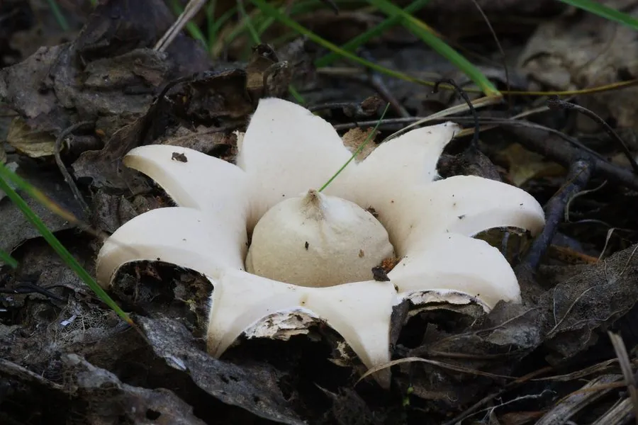

真菌 · 真菌界
袋形地星 Geastrum fimbriatum

袋形地星成熟时外包被裂成星状向外翻卷，中央托着无柄的球形孢子囊，孔口边缘呈毛须状，是林地落叶层中常见的真菌。
- 分类
- 门担子菌门纲伞菌纲目地星目科地星科属地星属
- 栖息环境
- 阔叶林与针叶林的落叶层、腐殖质土壤，夏秋季散生或群生
- 地理分布
- 温带地区广泛分布，中国各地林区与公园绿地可见
- 保护级别
- 暂无评估（IUCN 未评估，中国未列入重点保护名录）
物种志
袋形地星是担子菌门地星科的真菌，子实体由外包被和内包被组成。幼时近球形，半埋于落叶层中；成熟时外包被裂成 5–8 片尖角，向外翻卷成星状，把中央的孢子囊托起，但孢子囊本身没有柄，直接坐在星状裂片上，这是它与尖顶地星的重要区别。内包被球形，直径 1–2.5 cm，灰褐色，表面有细绒毛，顶端有一个圆锥形的孔口，孔口边缘呈细毛须状，因此得名“袋形”或“毛缘”。
袋形地星生于阔叶林和针叶林的落叶层、腐殖质土壤上，夏秋季散生或群生，在温带地区广泛分布，中国各地林区都有记录。它靠分解落叶和腐殖质生活，是森林物质循环中的分解者。袋形地星不可食用，质地干硬、没有食用价值；但它星状开裂的形态十分奇特，是自然观察和真菌摄影的常见对象。孢子成熟后从顶端孔口喷出，借雨滴和风力传播。
形态与习性
- 外包被裂成 5–8 片，星状向外翻卷
- 内包被球形，直径 1–2.5 cm，无柄
- 孔口圆锥形，边缘呈毛须状
- 孢子成熟后从孔口喷出，借风雨传播
- 食用性不可食用，质地干硬
- 生境林地落叶层与腐殖质土壤
- 辨识孢子囊无柄，可与尖顶地星区分
趣味知识
- 袋形地星的外包被裂成星状，把球形孢子囊托在中央。
- 它的孢子囊没有柄，这是与尖顶地星最直观的区别。
- 孔口边缘长着一圈细毛须，所以又叫“毛缘地星”。
- 地星不可食用，但星状外形是自然观察的好题材。